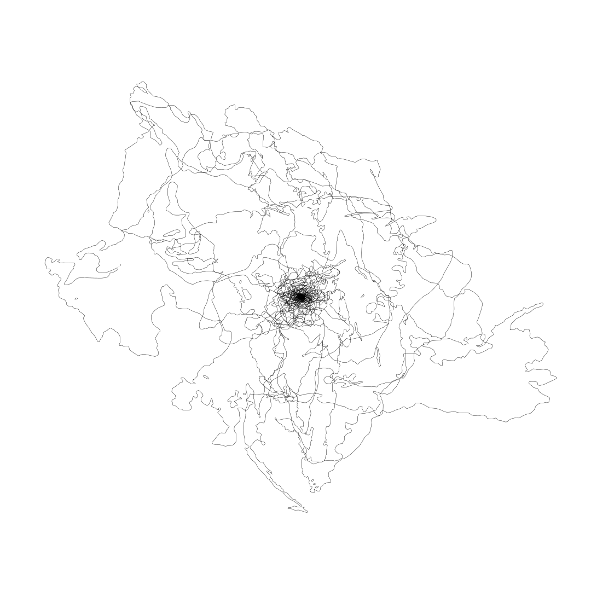

[xpan]
ciudad de méxico, principios de 2025
[manifiesto: topología conectiva]
---
[introducción]:
la topología conectiva es el eje teórico y filosófico de xpan. más que un marco de representación, es una herramienta activa para mapear y articular las relaciones, flujos e interconexiones que sostienen sistemas complejos en un mundo hiperconectado. no es un esquema estático, sino un tejido dinámico donde cada nodo (idea, individuo, espacio o tecnología) es una expresión en transformación continua.
su propósito: reconfigurar las conexiones que sostienen el presente y construir un nuevo entramado cultural global.
[principios fundamentales]:
---
[conexión como esencia]:
las conexiones tangibles e intangibles configuran la realidad. lo simbólico, lo material y lo afectivo convergen en este entramado donde las interacciones generan nuevas posibilidades de existencia.
en este marco:
- las conexiones no son lineales ni jerárquicas.
- operan en múltiples direcciones, generando estructuras emergentes en redefinición constante.
- la topología conectiva traza rutas nuevas, expandiendo lo posible.
---
[devenir continuo]:
la topología conectiva es fluida y mutante. sus relaciones evolucionan, se reconfiguran y desbordan los sistemas que las contienen.
cada transformación:
- no es una ruptura, sino una adaptación expansiva.
- modifica tanto al sistema como a quienes lo habitan.
- es una dinámica de intercambio que modela nuevas formas culturales.
---
[proximidades dinámicas]:
no es un mapa fijo, sino un espacio vectorizado donde convergen conexiones físicas, narrativas, significados y tensiones.
su función:
- reducir distancias simbólicas y materiales.
- crear resonancias entre geografías, culturas y conceptos.
- generar nuevas territorialidades sin depender de estructuras preexistentes.
---
[crítica y creación]:
la topología conectiva no solo analiza, sino que desmantela y rearticula conexiones.
lo hace:
- proponiendo modelos de interrelación que expanden futuros sostenibles y éticos.
- mediante activaciones, intervenciones y proyectos editoriales como dispositivos de transformación.
- como respuesta activa ante lo establecido, abriendo puntos de fuga hacia lo aún no concebido.
---
[herramienta para el devenir]:
la topología conectiva no es una teoría fija, sino un sistema vivo para imaginar y materializar nuevas formas de interconexión.
su operación:
- parte de una comprensión global y no lineal.
- entreteje lo crítico y lo creativo para redefinir relaciones y reconfigurar el tejido global.
- se manifiesta en estructuras habitables, recorribles y activables en diversos contextos.
- abre posibilidades inéditas mediante tecnologías emergentes.
es un movimiento en sí mismo. una manifestación activa de lo que aún no ha sido establecido. una invitación abierta a imaginar, intervenir y construir un nuevo orden de conexiones.
